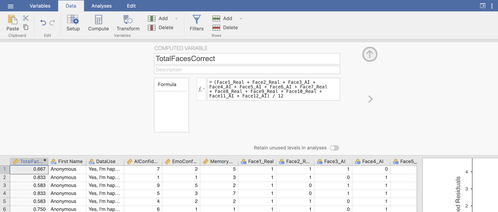
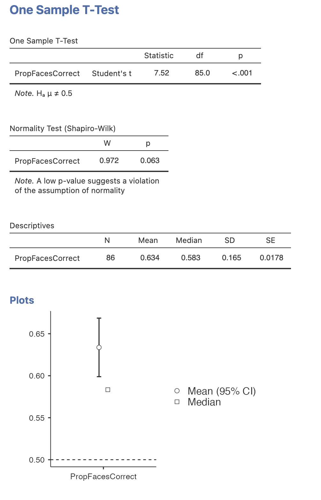
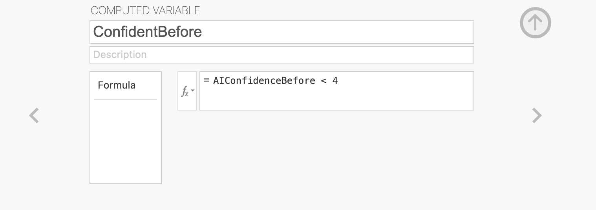
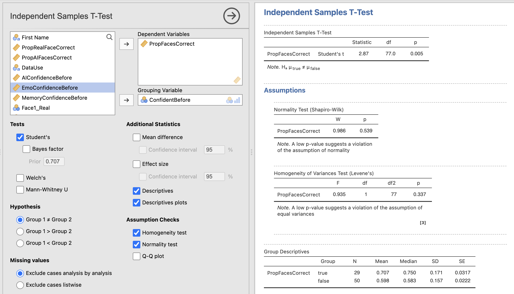
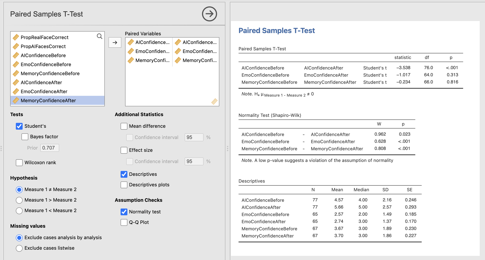
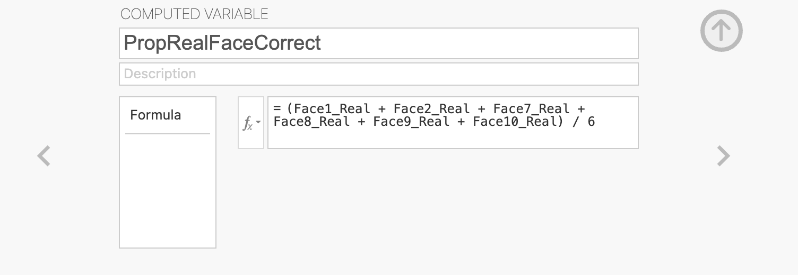
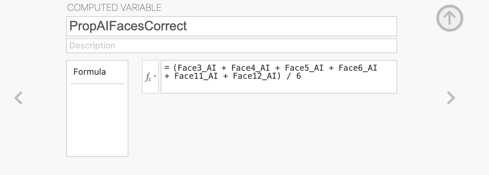
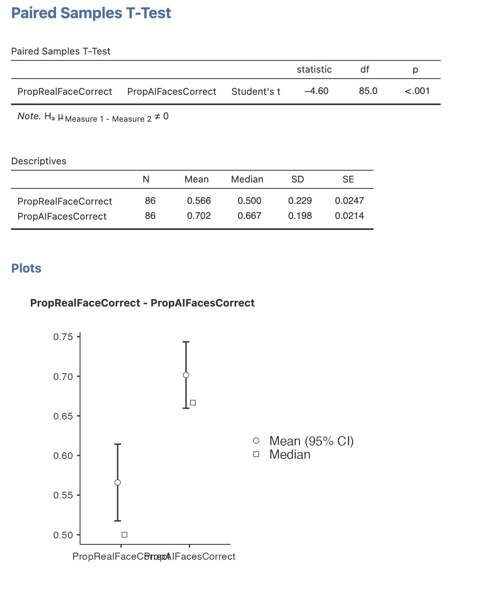

Week 4 : Two-Sample t-tests
This week we will explore how to use Jamovi to test hypotheses about a dataset using t-tests. We will touch on some revision from previous weeks so please do jump back to past computer practicals for revision if required
| Quantitative Methods | |
|---|---|
| Independent samples t-tests | |
| Paired samples t-tests | |
| Assumptions of parametric tests |
| Data Skills | |
|---|---|
| Computing a new variable from existing data | |
| Computing checks for normality and homogeneity of variance |
| Open Science | |
|---|---|
| Exploring and understanding new datasets |
1. The Dataset
We’ll be working with the dataset we collected after the break during the lecture in Week 3. This is a partial replication of a study published in the journal Psychological Science (Miller et al. 2023). The original paper found the following results summarised in the abstract.
Recent evidence shows that AI-generated faces are now indistinguishable from human faces. However, algorithms are trained disproportionately on White faces, and thus White AI faces may appear especially realistic. In Experiment 1 (N = 124 adults), alongside our reanalysis of previously published data, we showed that White AI faces are judged as human more often than actual human faces—a phenomenon we term AI hyperrealism. Paradoxically, people who made the most errors in this task were the most confident (a Dunning-Kruger effect). In Experiment 2 (N = 610 adults), we used face-space theory and participant qualitative reports to identify key facial attributes that distinguish AI from human faces but were misinterpreted by participants, leading to AI hyperrealism. However, the attributes permitted high accuracy using machine learning. These findings illustrate how psychological theory can inform understanding of AI outputs and provide direction for debiasing AI algorithms, thereby promoting the ethical use of AI.
We ran a quiz that students in the lecture could join on their phones/laptops. There were two parts to the quiz:
The faces section included 12 faces that were either photographs or real people or AI generated images of people. The stimuli were taked from the materials released by (Miller et al. 2023) on the Open Science Framework. Responses were either ‘Real person’ or ‘AI generated’.

The confidence section asked participants to rate their confidence in their ability to do the following three things.
- Distinguish real photos of people from AI generated images (Experimental condition)
- Distinguish photos of happy people from photos of sad people (Emotional control condition)
- Distinguish photos of people you used to know in primary school from strangers (Memory control condition)
Scores were recorded on a scale from 1 (Completely confidence) to 10 (Not at all confident). The confidence section was repeated before and after the faces section to see if participants confidence changed as a result of doing the AI faces task
2. The Challenge
This week we will use both one sample and two sample t-tests to explore the following hypotheses.
- People are able to distinguish AI generated faces from real photos of humans.
- Confident people are better at distinguishing AI faces from real faces.
- People’s confidence in distinguishing AI generated faces will reduce after performing the task, but their confidence about emotion perception and memory will not change.
Take a moment to think about these hypotheses. Which statistical test is most appropriate for each? Do they call for a one-tailed or a two-tailed test?
2. Exploring the data
It is critical to take some time to understand the data we work with before running critical hypothesis tests. Here we’ll take a look through the dataset to understand what information is present and if we’re happy to proceed with the analysis. This is similar to what we did in week 1 - you can refer back to the week 1 materials for additional guidance if you need it.
Before going any further, the data file rmb-week-3_lecture-quiz-data_ai-faces.csv into a new Jamovi session.
Take a read through the data columns. We have 26 in total with the following information.
| Column Names | Description |
|---|---|
First Name |
Participant ID - always ‘Anonymous’ |
DataUse |
Participant response to data re-use question |
AIConfidenceBefore |
Confidence in distinguishing AI faces from real BEFORE the task : 1 (Completely confident) to 10 (Not at all confident) |
EmoConfidenceBefore |
Confidence in distinguishing happy from sad faces BEFORE the task (Emotional control) : 1 (Completely confidence) to 10 (Not at all confident) |
MemoryConfidenceBefore |
Confidence in recognising a face from a long time ago BEFORE the task (Memory control) : 1 (Completely confidence) to 10 (Not at all confident) |
Face1_Real |
Result for face (1 is correct response, 0 is incorrect) |
Face2_Real |
Result for face (1 is correct response, 0 is incorrect) |
Face3_AI |
Result for face (1 is correct response, 0 is incorrect) |
Face4_AI |
Result for face (1 is correct response, 0 is incorrect) |
Face5_AI |
Result for face (1 is correct response, 0 is incorrect) |
Face6_AI |
Result for face (1 is correct response, 0 is incorrect) |
Face7_Real |
Result for face (1 is correct response, 0 is incorrect) |
Face8_Real |
Result for face (1 is correct response, 0 is incorrect) |
Face9_Real |
Result for face (1 is correct response, 0 is incorrect) |
Face10_Real |
Result for face (1 is correct response, 0 is incorrect) |
Face11_AI |
Result for face (1 is correct response, 0 is incorrect) |
Face12_AI |
Result for face (1 is correct response, 0 is incorrect) |
Quiz1 |
Response for revision quiz question |
Quiz2 |
Response for revision quiz question |
Quiz3 |
Response for revision quiz question |
AIConfidenceAfter |
Confidence in distinguishing AI faces from real AFTER the task |
EmoConfidenceAfter |
Confidence in distinguishing happy from sad faces AFTER the task (Emotional control) |
MemoryConfidenceAfter |
Confidence in recognising a face from a long time ago AFTER the task (Memory control) |
Work through the following questions, try to get an answer yourself before clicking to see the result. Data exploration is a critical skill that you’ll need whenever looking a new data throughout your degree.
You can use Descriptive Statistics to answer the following questions.
3. Computing overall accuracy
The descriptive statistics gave us a good overview of the dataset and we can start working towards testing our hypotheses.
One critical piece of information is missing though! we have accuracy for each individual face but not an overall score for each participant. We’ll need to compute this new variable ourselves from the average accuracy of all twelve faces.
We can define our own variables in Jamovi using the ‘Compute’ function in the ‘Variables’ or the ‘Data’ tabs. Open a new Transformed variable.
This will open a menu with an option to give the new variable an name and description. Name the variable ‘PropFacesCorrect’ to indicate that it contatins the proportion of faces that the participant responded correctly on. You can add a description if you like though this is optional.
The variable is defined within the formula box below the name definitions. We want to compute the average accuracy across all 12 faces so we can add the formula to compute that into the box.

The formula should add all the columns together and divide the result by 12 (the total number of faces). Make sure that all the additions are grouped by parentheses! otherwise Jamovi will only divide the final value by 12 and add it to the others. This is an example of BODMAS - Brackets, Of, Division/Multiplication, Addition/Subtraction that you might have covered in maths in school. talk to your tutor to make sure that this step makes sense.
The formula should look something like this, I’ve removed some faces to simplify the visualisation. You should include them all.
(Face1_Real + Face2_Real + ... + Face11_AI + Face12_AI) / 12Once this is complete, you should be able to find your new column of values.
Now, let’s take a look at our new variable. Compute some descritive statistics!
4. Hypothesis 1 - People are able to distinguish AI generated faces from real photos of humans
Ok, we’re ready to test the first hypothesis. Use the information you know about the dataset and try to find an answer!
Test the following hypothesis:
People are able to distinguish AI generated faces from real photos of humans
What sort of hypothesis is this and what is the most approprate statistical test?
Compute the statistics, do the data support the experimental or the null hypothesis?
We could write a statistical version of this hypothesis as something like this
People are able to distinguish AI generated faces from real photos of faces at an accuracy greater than chance level.
What sort of test do you need to run?
We need to run a one sample t-test that compares the PropCorrectFaces variable to a chance level of 0.5 (corresponding to 50%). The results could be reported as follows
A one sample t-test comparing the group average proportion of correctly identified faces (M = 0.634, SD=0.164) to chance level (proportion correct = 0.5) showed a significant effect, t(85) = 7.52, p<0.001. Participants were on average more accurate than chance at distinguishing AI generated face from photos of real faces.

5. Hypothesis 2 - Confident people are better at distinguishing AI faces from real faces.
Now the second hypothesis. We don’t have everything we need to test this hypothesis yet. We’ll need some way to split our participants into two groups - one with high confidence in AI face detection and one with low confidence. Time to compute another variable.
Compute a new variable named ConfidentBefore that separates the groups based on the median AI face detection confidence before the task.
You’ll need the median value for AIConfidenceBefore - you can compute this from descriptive statistics.
The computed variable will need some logical condition (using operators like ‘>’, ‘<’ or ‘==’) that separates participants with confidence above and below the median.
The median value for AIConfidenceBefore is 4, so our computed variable definition will look like this.

The values in ConfidentBefore will now be ‘True’ for people with high confidence and ‘False’ for people with low confidence. It doesn’t matter if you’ve done this the other way around - the tests will still work but the results will be flipped in the other direction (multiplied by -1)
With our new variable, we have what we need to run an independent samples t-test. This is very straightforward following the analyses we’ve run previously in the module.
Open the ‘Independent Sample t-test’ menu under ‘t-tests’. To run the analysis, drag PropFacesCorrect across as our dependent variable and our new ConfidentBefore variable as the grouping variable. The results should appear on the right automatically.
Once you have computed the core test - add the following options:
- Descriptives
- Homogeneity Test
- Normality Test

Let’s think through the results
6. Hypothesis 3 - People’s confidence in their ability to distinguish AI generated faces will reduce after performing the task
Next we want to explore whether performing the face decision task changes peoples confidences in their abililty to detect AI generated faces. Remember that all participants categorised 12 faces with immediate correct/incorrect feedback and made confidence ratings at the start and end of the task.
Open the ‘Paired Sample t-test’ menu under ‘t-tests’. To run the analysis, drag AIConfidenceBefore and AIConfidenceAfter across as our pair of dependent variables. This is the format for running paired samples t-tests, the rest of the options should be familiar from our previous analyses.
Once you have computed the core test, do the same for the EmoConfidence and MemoryConfidence, and add the following options:
- Descriptives
- Normality Test
The results should appear on the right automatically.

Let’s think through the results…
7. Bonus Hypothesis! People are more accurate at identifying photos of real people compared to AI generated photos.
Let’s use our new skills from this practical to answer one last question.
Use a t-test to test this hypothesis:
People are more accurate at identifying photos of real people compared to AI generated photos
You’ll several of the skills from this session to answer the question… think through what sort of variables you’ll need and what sort of test you’ll need.
We need 2 new variables to answer this question. We have already computed PropCorrectFaces in an earlier section, but we now need to make separate versions of this for AI faces and real faces…
The variable transforms will look something like this:
 
What sort of t-test will you need?
We need to compute a paired samples t-test to answer the question as each participant contributes to both the AI face and real face conditions. Compute the test along with some descriptive statistics, we can report the test as follows
A paired samples t-test showed a significant difference in the correct identification of AI faces (M=0.702, SD=0.198) compared to real faces (M=0.566, SD=0.229). t(85) = -4.60, p<0.001. AI faces were identified more accurately than real faces.

8. Summary
We’ve computed a range of tests to statistically assess our hypotheses today! One experiment can often yield enough data to run a wide range of analyses. It is always a good idea to start with your hypotheses and predictions to break the analysis down into manageable chunks.